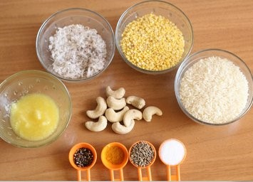

Khara Pongal, a traditional South Indian dish, holds a significant place in the culinary heritage of the region. This savory dish, also known as Khara Huggi in Karnataka, traces its roots back to ancient times and is a staple in South Indian households. Pongal, in general, is associated with the harvest festival of Pongal, celebrated with much fervor in the southern states of India. The history of Khara Pongal is intertwined with the rich agricultural practices of South India. Farmers would prepare this dish as an offering to the gods, expressing gratitude for a bountiful harvest. Over time, it evolved into a daily meal, appreciated for its simplicity and nourishing qualities. Khara Pongal is primarily made with rice and lentils, often tempered with mustard seeds, cumin, black pepper, and curry leaves, which impart a delightful aroma and flavor. It is also enriched with ghee, which adds a rich and buttery texture. The dish is commonly garnished with cashews and sometimes grated coconut, enhancing its taste and providing a satisfying crunch. The appeal of Khara Pongal lies in its balance of flavors – the earthiness of rice and lentils, the warmth of spices, and the richness of ghee. It is not only a comfort food but also a nutritious choice, as it combines proteins from lentils with carbohydrates from rice.
Khara Pongal Recipe

Ingredients Required
1 cup rice
2 tablespoon ghee
1 pinches asafoetida
1 handful curry leaves
5 cashews
water as required
1/2 teaspoon turmeric
1/2 teaspoon black pepper
1 teaspoon cumin seeds
2 teaspoon ginger paste
1 cup moong dal
salt as required
Instructions
Dry roast the moong dal & cook with rice Here's how you can prepare this delicious recipe at home: Take a pan and add moong dal in it. Dry roast till it turns golden and aromatic. Wash the same under running water and transfer it in a deep pan along with rice and enough water to submerge both. Bring it to a boil and turn off the flame, once well cooked. Add salt according to your taste and keep aside.
Saute ginger with spices & add the dal-rice mixture Next, place a pan on medium flame and pour ghee. Once heated, add cashews and fry until they change their colour to a golden brown. Once done, take out and keep aside and warm. Now, add ginger in the pan and fry for a minute or two. Put cumin seeds, ginger paste, curry leaves and black pepper along with turmeric powder and asafoetida. Add the dal-rice mixture and stir well for about 5 minutes.
Let it simmer, then garnish with cashews Then simmer for about 3-4 minutes on medium flame. Lastly, turn off the flame and transfer it to a serving dish. Garnish with cashews. To make it look even more eye-grabbing, you can serve it with some slightly fried coconut slices, dry curry leaves and some roasted red chillies to spice up this traditional South Indian recipe. Serve this easy Pongal Recipe with Vada and Sambar.
 South Indian Recipes
South Indian Recipes Khara Pongal, a traditional South Indian dish, holds a significant place in the culinary heritage of the region. This savory dish, also known as Khara Huggi in Karnataka, traces its roots back to ancient times and is a staple in South Indian households. Pongal, in general, is associated with the harvest festival of Pongal, celebrated with much fervor in the southern states of India. The history of Khara Pongal is intertwined with the rich agricultural practices of South India. Farmers would prepare this dish as an offering to the gods, expressing gratitude for a bountiful harvest. Over time, it evolved into a daily meal, appreciated for its simplicity and nourishing qualities. Khara Pongal is primarily made with rice and lentils, often tempered with mustard seeds, cumin, black pepper, and curry leaves, which impart a delightful aroma and flavor. It is also enriched with ghee, which adds a rich and buttery texture. The dish is commonly garnished with cashews and sometimes grated coconut, enhancing its taste and providing a satisfying crunch. The appeal of Khara Pongal lies in its balance of flavors – the earthiness of rice and lentils, the warmth of spices, and the richness of ghee. It is not only a comfort food but also a nutritious choice, as it combines proteins from lentils with carbohydrates from rice.
Khara Pongal, a traditional South Indian dish, holds a significant place in the culinary heritage of the region. This savory dish, also known as Khara Huggi in Karnataka, traces its roots back to ancient times and is a staple in South Indian households. Pongal, in general, is associated with the harvest festival of Pongal, celebrated with much fervor in the southern states of India. The history of Khara Pongal is intertwined with the rich agricultural practices of South India. Farmers would prepare this dish as an offering to the gods, expressing gratitude for a bountiful harvest. Over time, it evolved into a daily meal, appreciated for its simplicity and nourishing qualities. Khara Pongal is primarily made with rice and lentils, often tempered with mustard seeds, cumin, black pepper, and curry leaves, which impart a delightful aroma and flavor. It is also enriched with ghee, which adds a rich and buttery texture. The dish is commonly garnished with cashews and sometimes grated coconut, enhancing its taste and providing a satisfying crunch. The appeal of Khara Pongal lies in its balance of flavors – the earthiness of rice and lentils, the warmth of spices, and the richness of ghee. It is not only a comfort food but also a nutritious choice, as it combines proteins from lentils with carbohydrates from rice.